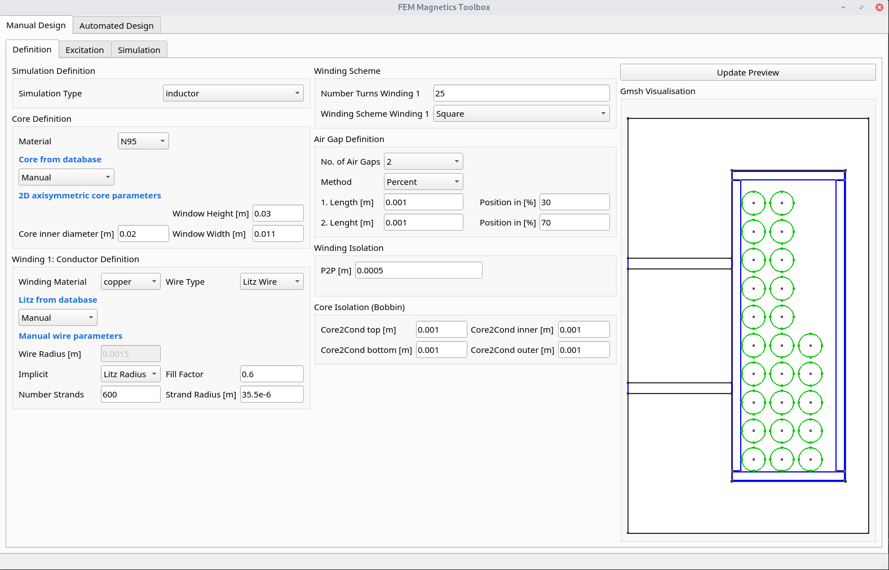

FEMMT development version (for developers only)¶
This is the latest development version with the latest features. Note: You may need to install git. Also have a look at the developers notes.
FEMMT is using the material database. To use the latest version for developing, also install the material database in developer mode. It is important to first install the material database, second install FEMMT. Note the dot . in the following instructions.
cd /Documents/Folder/of/Interest/materialdatabase
git clone git@github.com:upb-lea/materialdatabase.git
cd materialdatabase
pip install -e .
After the material database has been installed, install FEMMT:
cd /Documents/Folder/of/Interest/
git clone git@github.com:upb-lea/FEM_Magnetics_Toolbox.git
cd FEM_Magnetics_Toolbox/
pip install -e .
Basics¶
The magnetic component can be an inductor, a transformer, or a transformer with integrated stray path. The parameterization process is divided into the following steps:
Choose the simulation type, whether it’s frequency domain or time domain simulation,
set core parameters (geometry, material),
set air gap parameters (position, height),
set insulation distances
set conductor parameters (litz/solid wire),
start the frequency domain simulation by specifying the given frequencies, currents, and phases, and start the time domain simulation by specifying the given currents, and time parameters.
Please have a look at the basic_inductor example for frequency domain simulation, and at the basic_inductor_time_domain example for time domain simulation.
The examples contain among other things:
Geometries: Coil, transformer, transformer with integrated stray path,
wire and stranded wire definition,
air gaps definition,
excitation with different frequencies, amplitudes and phases for frequency domain simulation, and with amplitudes and time steps for time domain simulation.
The simulation results can be found in working_directory/results/result_log_electro_magnetic.json. Working directory can either be set by the user otherwise it located at /python-side-packages-path/femmt. In it you can find
power loss in the core: hysteresis losses and eddy current losses,
losses per winding and for each individual winding,
self- and mutual inductances.
For a more detailed guide on how to create a model, please have a look here.
GUI (Experimental)¶
There is a first preview for a GUI. Installing this is a bit cumbersome at first, but will be simplified in the future:
Download the complete repository via
Code->Download ZIPand unpack it.install the development version of femmt as described above
run python
downloads/path-to_femmt/femmt/gui/femmt_gui.py
Please note, the GUI is experimental.

FEMM Validation (for developers only)¶
For verification purposes a FEMM model can be created in FEMMT. To do this FEMM needs to be installed as well as the FEMM python package. The functionality is limited, e.g. the air gaps are limited to the ‘center’-type. Other types, like ‘percent’ are not implemented.